Toy Model
To see what goes on with a fit when we know that we have a constant plus a Gaussian we wrote a simple macro which takes such a function, throws random "particles" with this distribution, and then fits that distribution to get the yield and the background. By running this with different seeds, we see what would happen with different samples of real data. The yield and the background were chosen to roughly match the yields in this analysis. The macro which runs this is here.
We then ran this with 4e6 "particles" 1000x so we could get reasonable statistics roughly matching those in some of our worse data points. Note that while this ran 1000x and we did save chi^2, we did not check to make sure the fit converged. We assume that fits way out of range of the true value or the other fits failed. We filled a TTree with the fit parameters from these fits and made plots from that TTree - given that this is a study that will only be looked at by the GPC, we did not spend any time making plots pretty.
Fit 1 is from dEta = -1.75 to 0.0.
Fit 2 is from dEta = -1.75 to 0.3.
Fit 3 is from dEta = -1.65 to 0.0.
Yield
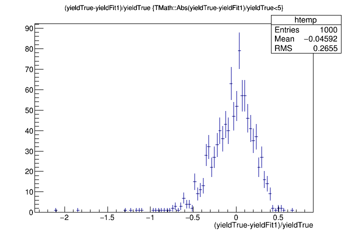 |
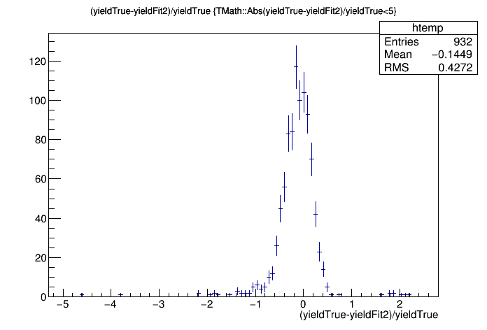 |
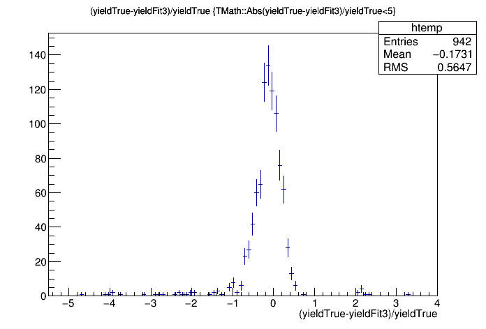 |
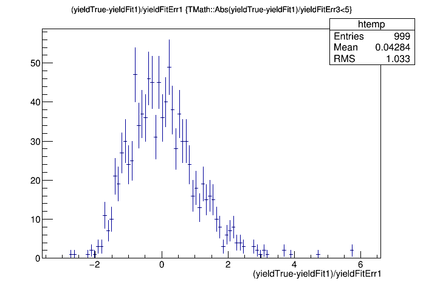 |
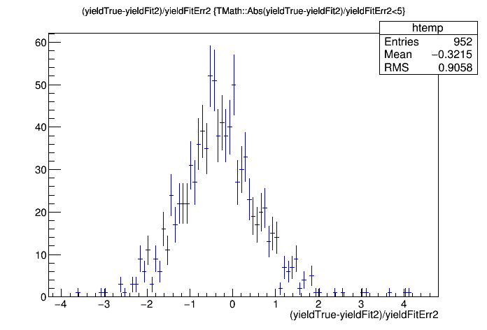 |
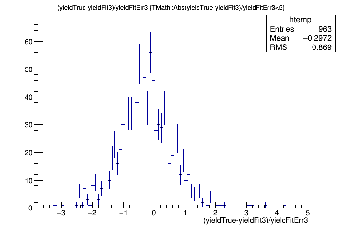 |
The lower plots above shows roughly what we would expect - they look roughly Gaussian with roughly the right width because approximately 97% of the values are within 2 sigma.
Comparing fits with different ranges gets complicated for real data because for an individual sample, the results are not statistically independent since they use almost the same points. Figuring out how to compare these results is nontrivial. Below are some comparisons of Fit 1 and Fit 2 with different measures of how far they "should" be apart:
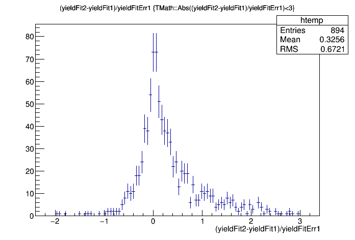 |
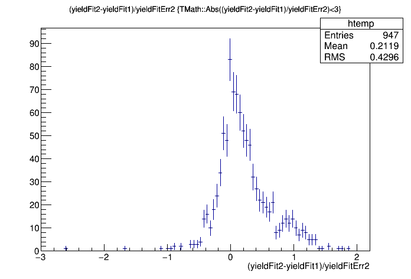 |
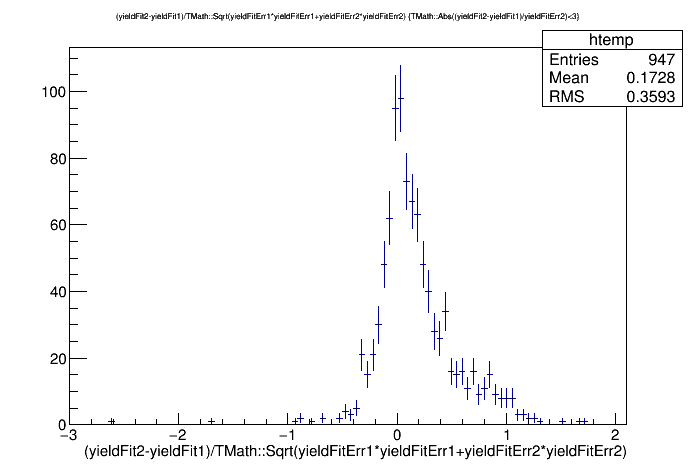 |
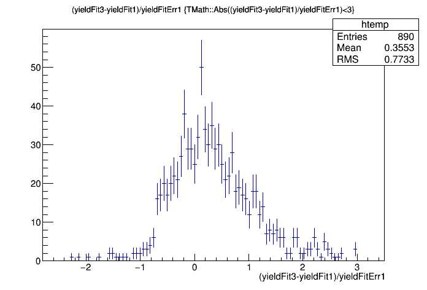 |
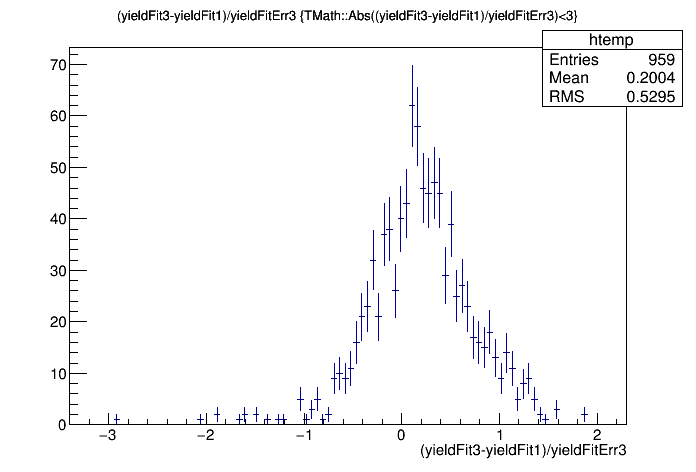 |
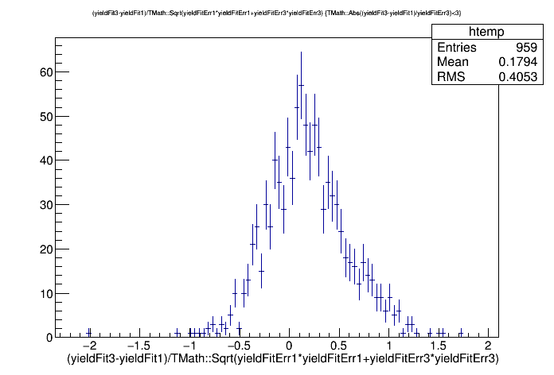 |
You can see a skew in the results depending on the fit range.
Using this toy model we can see how often fits are not within range when only statistics are considered. First we used the TTree to find how many times all fits were within three sigma - we used this as our denominator, since this is when we think the fit worked. Then we used the TTree to find out how many times the fits were within one sigma. This is our numerator. Using this metric, we calculate that one yield will be more than one sigma another about 20% of the time - comparable with what we see in the (real) data.
Of the 180 fits where at least one of the yields is not within 1 sigma of
the others:
110 (61.1111%) fits are within 1 sigma and 168 (93.3333%) within 2 sigma
of the true yield for Fit 1
122 (67.7778%) fits are within 1 sigma and 166 (92.2222%) within 2 sigma
of the true yield for Fit 2
116 (64.4444%) fits are within 1 sigma and 167 (92.7778%) within 2 sigma
of the true yield for Fit 3
I repeated this with 1000 "samples" with 1e7 "particles" each.
There were 989 fits where all three fits were within 3 sigma of each other
and therefore were deemed to be good fits.Of the 126 fits where at least
one of the yields is not within 1 sigma of the others:
73 (62.3932%) fits are within 1 sigma and 110 (94.0171%) within 2
sigma of the true yield for Fit 1
78 (66.6667%) fits are within 1 sigma and 107 (91.453%) within 2 sigma of
the true yield for Fit 2
70 (59.8291%) fits are within 1 sigma and 104 (88.8889%) within 2 sigma of
the true yield for Fit 3
That is, when one of the yields is more than 1 sigma away from the others, the distribution of the yields about the true value is roughly what one would expect from normal statistical variations because that's all that this toy model includes.
The skew in the yield is more concerning.
For 4e6 "particles" we found that of all fits where the yield is within 3
sigma for all fits the relative difference between the fit yield and the
true yield is:
Mean for Fit 1: 0.0574528 +/- 0.0087436
Mean for Fit 2: 0.136491 +/- 0.0105014
Mean for Fit 3: 0.130895 +/- 0.0101912
For 1e7 "particles we found that of all fits where the yield is within 3
sigma for all fits the relative difference between the fit yield and the
true yield is:
Mean for Fit 1: 0.0185028 +/- 0.00485867
Mean for Fit 2: 0.051575 +/- 0.00876477
Mean for Fit 3: 0.0501975 +/- 0.00597894
For 1e8 "particles we found that of all fits where the yield is within 3
sigma for all fits the relative difference between the fit yield and the
true yield is:
Mean for Fit 1: -0.00196928 +/- 0.00137037
Mean for Fit 2: -0.000245789 +/- 0.00151233
Mean for Fit 3: 0.00092649 +/- 0.00154835
For 4e6 "particles" with twice the yield of our nominal case we
found that of all fits where the yield is within 3 sigma for all fits the
relative difference between the fit yield and the true yield is:
Mean for Fit 1: 0.0100876 +/- 0.00361358
Mean for Fit 2: 0.0280914 +/- 0.00393006
Mean for Fit 3: 0.0304204 +/- 0.00416345
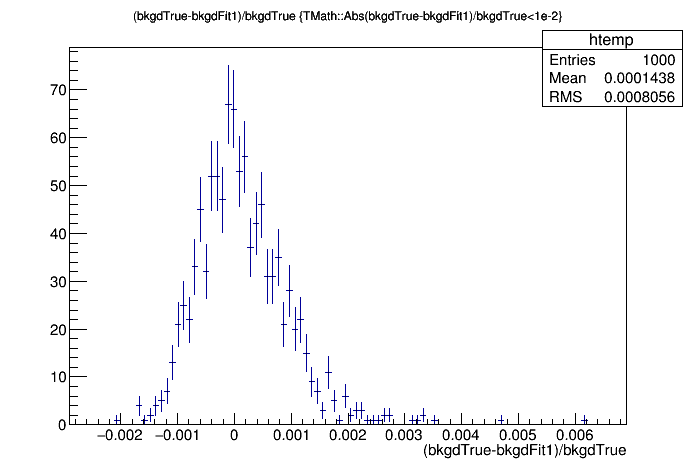 |
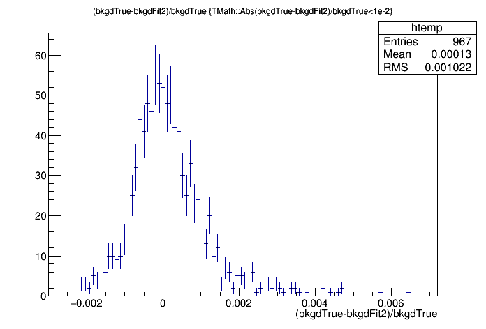 |
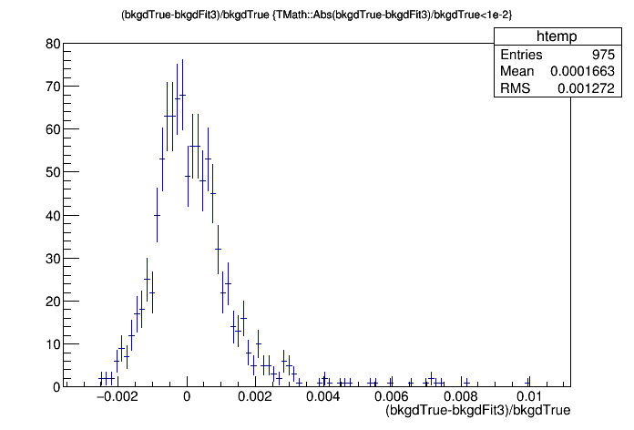 |
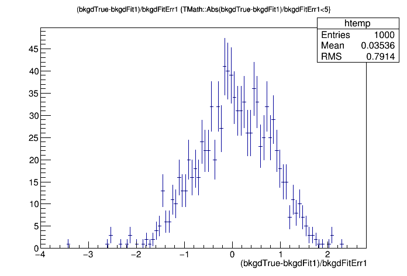 |
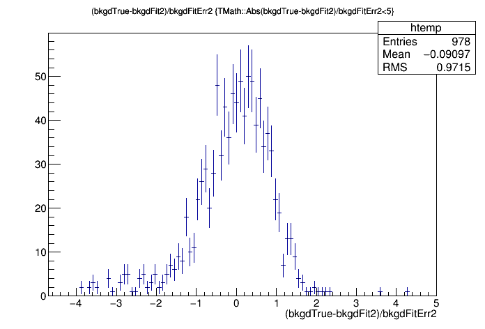 |
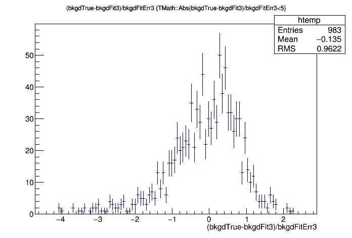 |
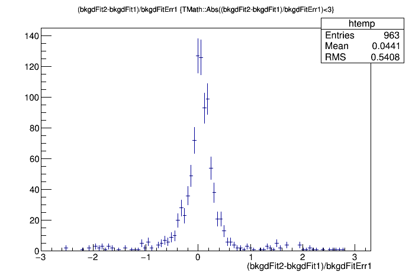 |
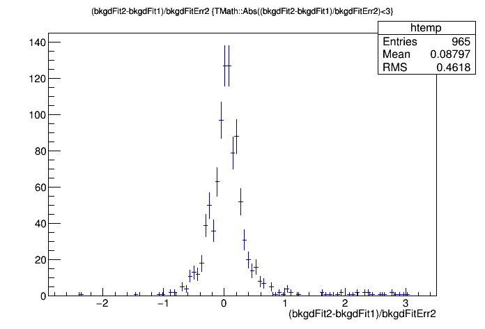 |
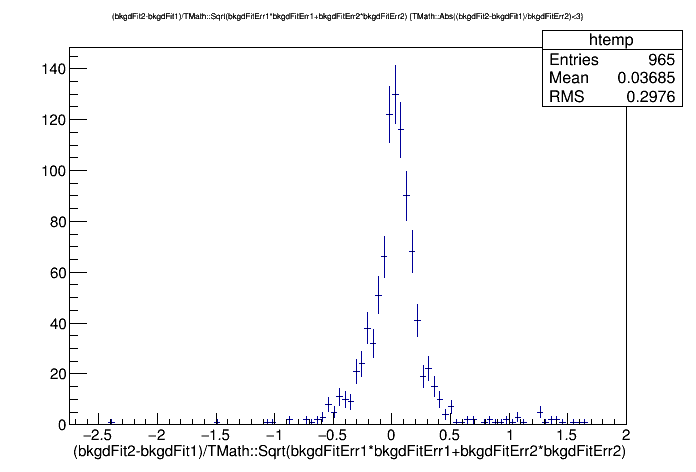 |
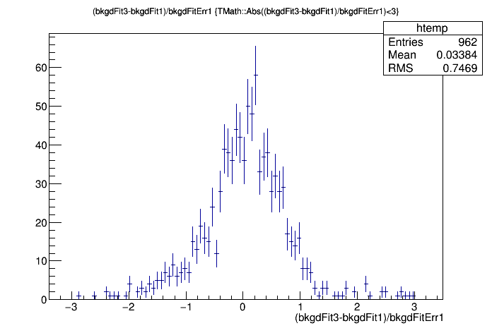 |
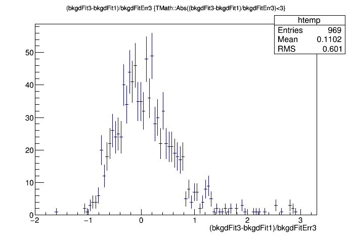 |
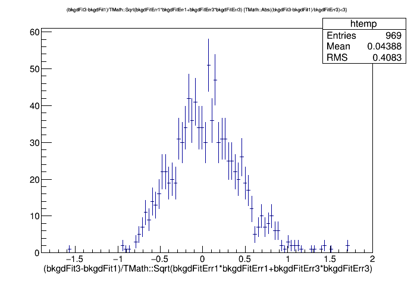 |